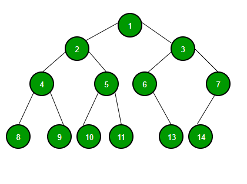

# 關於組織樹狀圖的資料結構設計方法
# 先別說這個了，你有聽過「安＿」嗎？
最近公司有一個需求：就是我們需要建立一個具有組織樹狀圖的平台。
玩家可以將此平台介紹給親朋好友或其他人來辦帳號。
而利用此連結註冊的新帳號會紀錄其介紹人，也就是所謂的「上線」，而相對於這個「上線」來說，自己就是「下線」。
「上線」在這個平台中可以查看到自己的所有「下線」與其所有「下線」的活動狀態，就像一棵樹狀結構一樣。

以上圖為例，2, 3, … 14 都可以算是 1 的 「下線」，而其中 2, 3 也是 1 的「直屬下線」。
做完了名詞解釋後，我們來談談這次的需求。
我們除了要能夠將此玩家的組織圖完整顯現，我們還要能夠計算出各個上下線之間的交易金額與歷史紀錄。
先撇除交易金額這些事務性的功能不看，由於每個玩家皆可以擁有自己的「下線」而且每個玩家的直屬下線個數也 不限制 ，因此這並非典型的二元樹 (binary tree)。
某玩家可能有 m 個「直屬下線」，每個「直屬下線」也可以有各自的 n 個「直屬下線」，以此反覆… 且沒有最大層數的限制。
基於以上規則，我們要如何在資料庫中儲存資料格式才能很好地在有限的 Query 次數中得知某玩家的「所有下線」呢？
若是我們只是在每個玩家的資料欄位中紀錄此玩家屬於哪個上線，貌似無法解決此問題。我們無法在有限次數的 Query 中得到所有下線的資料。
為了解決這個問題，我們有兩個方法，但是其實都是相同的概念。
- 我們可以新增一個欄位，叫做
parents這個欄位是一個array結構，當新玩家建立時，除了記錄自己的上線之外，還將自己的上線與其所有上線紀錄在此欄位之中。
以上方的 Tree 為例：我們可以將資料紀錄成類似如下的格式
1
2
3
4
5
6
7
8
9
10
11
12
13
14{ id: 1, parent: null, parents: [] },
{ id: 2, parent: 1, parents: [1, ] },
{ id: 3, parent: 1, parents: [1, ] },
{ id: 4, parent: 2, parents: [1, 2] },
{ id: 5, parent: 2, parents: [1, 2] },
{ id: 6, parent: 3, parents: [1, 3] },
{ id: 7, parent: 3, parents: [1, 3] },
{ id: 8, parent: 4, parents: [1, 2, 4] },
{ id: 9, parent: 4, parents: [1, 2, 4] },
{ id: 10, parent: 5, parents: [1, 2, 5] },
{ id: 11, parent: 5, parents: [1, 2, 5] },
{ id: 13, parent: 6, parents: [1, 3, 6] },
{ id: 14, parent: 7, parents: [1, 3, 7] },
...
未來當我們要找尋某玩家的所有下線時，只要 找尋 Database 中 parents 欄位有此玩家資訊的玩家，就可以在一次的 Query 中得到我們想要的結果了。
例如我們要找尋 2 的所有下線，我們只要找尋 parents 中有 2 的資料，即為結果： 4, 5, 8, 9, 10, 11 。
- 我們新增一個欄位，叫做
path這個欄位是一個string。這個概念其實與上方非常相似，但是我們使用了類似檔案路徑的結構來儲存相對關係。
一樣以上方的樹狀圖為例，若為此資料儲存方式，則資料的儲存長相可能如下：
1
2
3
4
5
6
7
8
9
10
11
12
13
14{ id: 1, parent: null, path: "/"},
{ id: 2, parent: 1, path: "/1/" },
{ id: 3, parent: 1, path: "/1/" },
{ id: 4, parent: 2, path: "/1/2/" },
{ id: 5, parent: 2, path: "/1/2/" },
{ id: 6, parent: 3, path: "/1/3/" },
{ id: 7, parent: 3, path: "/1/3/" },
{ id: 8, parent: 4, path: "/1/2/4/" },
{ id: 9, parent: 4, path: "/1/2/4/" },
{ id: 10, parent: 5, path: "/1/2/5/" },
{ id: 11, parent: 5, path: "/1/2/5/" },
{ id: 13, parent: 6, path: "/1/3/6/" },
{ id: 14, parent: 7, path: "/1/3/7/" },
...
這種的搜尋方式就更簡單了，我們只要利用在搜尋資料庫時對 path 欄位進行 Regular Expression ，找尋其 path 字串中擁有部分自己 path 字串的資料，就可以把下線全部抓出來了。
我們一樣以 2 為例好了。
由於 2 的 path 是 “/1/2/” ，因此我們只要找尋 path 中有 “/1/2/” 的資料，即是： 4, 5, 8, 9, 10, 11 。
Regular Expression 可以這樣下： /^${this.path}.*/
# 結語
其實以上兩種方式的概念都是如出一徹的。
只是在 RDS 的資料儲存中，以 Array 的形式儲存 可能不是這麼方便 ，因此第二種會是不錯的選擇。
而若是資料庫為 mongodb 這類的 NoSQL，第一種就會是一個挺方便的做法。